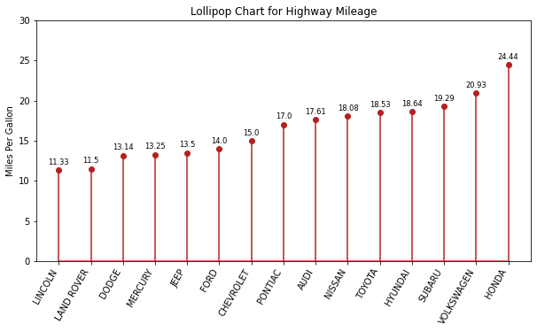
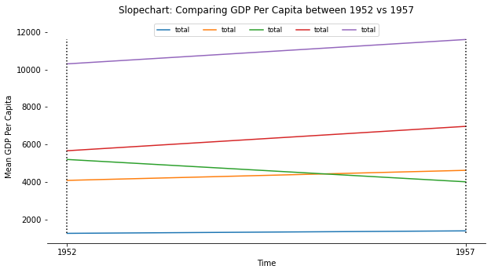
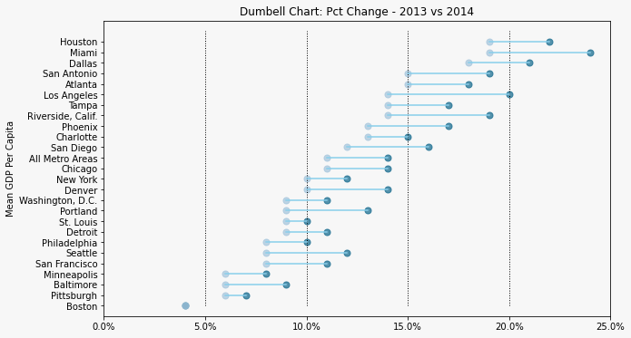

Ranking
Contents
Ranking¶
import matplotlib.pyplot as plt
import numpy as np
import pandas as pd
Lollipop¶
mpg = pd.read_csv('../../datasets/stats/mpg.csv')
mpg.head()
| manufacturer | model | displ | year | cyl | trans | drv | cty | hwy | fl | class | |
|---|---|---|---|---|---|---|---|---|---|---|---|
| 0 | audi | a4 | 1.8 | 1999 | 4 | auto(l5) | f | 18 | 29 | p | compact |
| 1 | audi | a4 | 1.8 | 1999 | 4 | manual(m5) | f | 21 | 29 | p | compact |
| 2 | audi | a4 | 2.0 | 2008 | 4 | manual(m6) | f | 20 | 31 | p | compact |
| 3 | audi | a4 | 2.0 | 2008 | 4 | auto(av) | f | 21 | 30 | p | compact |
| 4 | audi | a4 | 2.8 | 1999 | 6 | auto(l5) | f | 16 | 26 | p | compact |
mpg_group = mpg.loc[:, ['cty', 'manufacturer']].groupby('manufacturer').agg(
{'cty': np.mean})
mpg_group.head()
| cty | |
|---|---|
| manufacturer | |
| audi | 17.611111 |
| chevrolet | 15.000000 |
| dodge | 13.135135 |
| ford | 14.000000 |
| honda | 24.444444 |
mpg_group.sort_values('cty', inplace=True)
mpg_group.reset_index(inplace=True)
mpg_group.head()
| manufacturer | cty | |
|---|---|---|
| 0 | lincoln | 11.333333 |
| 1 | land rover | 11.500000 |
| 2 | dodge | 13.135135 |
| 3 | mercury | 13.250000 |
| 4 | jeep | 13.500000 |
x = mpg_group['manufacturer'].str.upper()
y = mpg_group['cty']
_, ax = plt.subplots(figsize=(10, 5))
markerline, stemlines, _ = ax.stem(x, y)
stemlines.set_color('firebrick')
markerline.set_markerfacecolor('firebrick')
markerline.set_markeredgecolor('firebrick')
ax.set(ylim=(0, 30),
ylabel='Miles Per Gallon',
title='Lollipop Chart for Highway Mileage')
plt.setp(ax.get_xticklabels(), rotation=60, horizontalalignment='right')
for row in mpg_group.itertuples():
ax.text(row.Index,
row.cty + .5,
s=round(row.cty, 2),
horizontalalignment='center',
verticalalignment='bottom',
fontsize='small')
plt.show()

Slope¶
gdp = pd.read_csv('../../datasets/stats/gdp_per_cap.csv')
gdp.head()
| continent | 1952 | 1957 | |
|---|---|---|---|
| 0 | Africa | 1252.572466 | 1385.236062 |
| 1 | Americas | 4079.062552 | 4616.043733 |
| 2 | Asia | 5195.484004 | 4003.132940 |
| 3 | Europe | 5661.057435 | 6963.012816 |
| 4 | Oceania | 10298.085650 | 11598.522455 |
gdp_new = gdp.melt(id_vars=['continent'],
value_vars=['1952', '1957'],
var_name='time',
value_name='total',
ignore_index=False)
gdp_new['continent'] = gdp_new['continent'].astype('category')
gdp_new
| continent | time | total | |
|---|---|---|---|
| 0 | Africa | 1952 | 1252.572466 |
| 1 | Americas | 1952 | 4079.062552 |
| 2 | Asia | 1952 | 5195.484004 |
| 3 | Europe | 1952 | 5661.057435 |
| 4 | Oceania | 1952 | 10298.085650 |
| 0 | Africa | 1957 | 1385.236062 |
| 1 | Americas | 1957 | 4616.043733 |
| 2 | Asia | 1957 | 4003.132940 |
| 3 | Europe | 1957 | 6963.012816 |
| 4 | Oceania | 1957 | 11598.522455 |
_, ax = plt.subplots(figsize=(10, 5))
gdp_new.groupby('continent').plot.line(x='time', y='total', ax=ax)
for i in [0, 1]:
ax.vlines(x=i,
ymin=gdp_new['total'].min(),
ymax=gdp_new['total'].max(),
colors='k',
linestyle='dotted')
ax.set(xlabel='Time',
ylabel='Mean GDP Per Capita',
title='Slopechart: Comparing GDP Per Capita between 1952 vs 1957\n',
xticks=[0, 1],
xticklabels=['1952', '1957'])
ax.spines[['right', 'top', 'left']].set_visible(False)
ax.legend(loc='center',
bbox_to_anchor=(0.5, 1),
ncol=len(gdp_new['continent'].unique()),
fontsize='small')
plt.show()

Dumbbell¶
health = pd.read_csv('../../datasets/stats/health.csv')
health.head()
| Area | pct_2014 | pct_2013 | |
|---|---|---|---|
| 0 | Houston | 0.19 | 0.22 |
| 1 | Miami | 0.19 | 0.24 |
| 2 | Dallas | 0.18 | 0.21 |
| 3 | San Antonio | 0.15 | 0.19 |
| 4 | Atlanta | 0.15 | 0.18 |
health.sort_values('pct_2014', inplace=True)
health.head()
| Area | pct_2014 | pct_2013 | |
|---|---|---|---|
| 25 | Boston | 0.04 | 0.04 |
| 23 | Pittsburgh | 0.06 | 0.07 |
| 22 | Baltimore | 0.06 | 0.09 |
| 24 | Minneapolis | 0.06 | 0.08 |
| 21 | San Francisco | 0.08 | 0.11 |
from matplotlib import lines
def connect_line(p1, p2, ax):
l = lines.Line2D([p1[0], p2[0]], [p1[1], p2[1]], color='skyblue')
ax.add_line(l)
return l
_, ax = plt.subplots(facecolor='#f7f7f7', figsize=(10, 6))
xticks = [i / 100 for i in range(0, 30, 5)]
xticklabels = [f"{i*100}%" for i in xticks]
for i in [.05, .10, .15, .20]:
ax.vlines(x=i, ymin=0, ymax=26, color='black', lw=1, linestyles='dotted')
for (year, color) in zip([health['pct_2013'], health['pct_2014']],
['#0e668b', '#a3c4dc']):
ax.scatter(x=year, y=health['Area'], color=color, s=50, alpha=0.7)
for i, p1, p2 in zip(health['Area'], health['pct_2013'], health['pct_2014']):
connect_line([p1, i], [p2, i], ax)
ax.set(ylim=(-1, 27),
ylabel='Mean GDP Per Capita',
xticks=xticks,
xticklabels=xticklabels,
facecolor='#f7f7f7',
title='Dumbell Chart: Pct Change - 2013 vs 2014')
plt.show()
